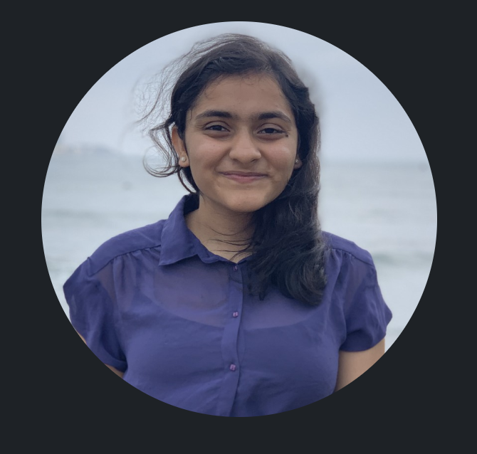
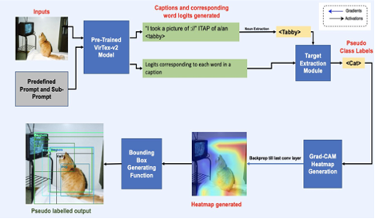
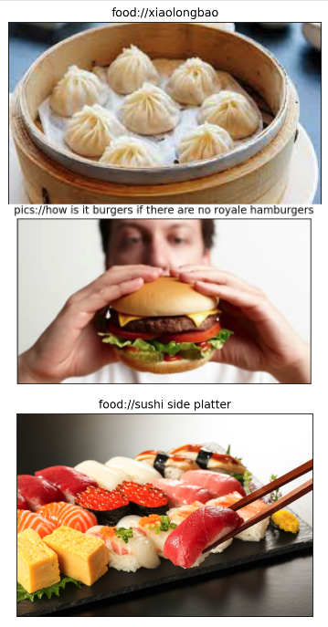
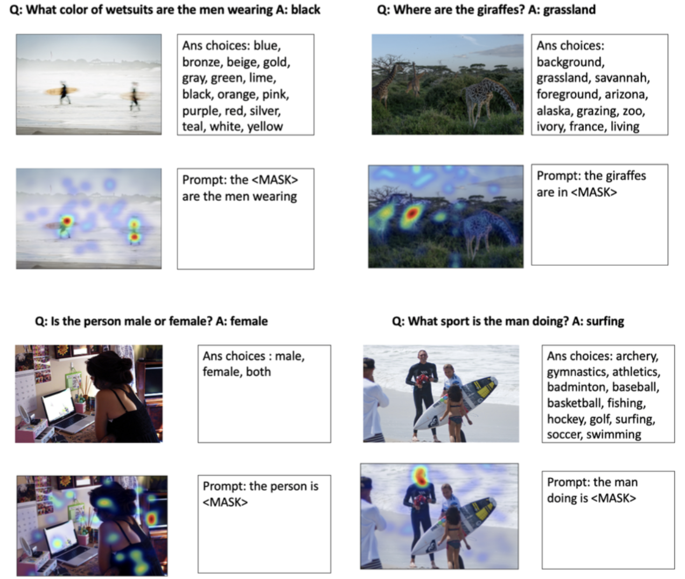

AI Engineer & Researcher
Machine Learning & Computer Vision
AI Algorithm Developer at Stoneridge Inc. and a recent Machine Learning graduate from the University of Michigan. Passionate about building intelligent systems at the intersection of computer vision and multimodal learning.

About Me
My research interests broadly lie in image and video understanding and multimodal learning. Specifically, I'm interested in developing 'self-supervised' computer vision models that learn from multimodal sensation like natural language and cross-modal image data.
Featured Projects

Self-Supervised Object Detection with Multimodal Image Captioning
A novel self-supervised pipeline using natural language supervision to localize objects, achieving an mAP of 21.57% when finetuned with an FCOS detector.

Language Supervised Pre-Training for Fine-grained Food Classification
Leveraged a vision and language pre-training model, trained on RedCaps sub-reddits, for fine-grained food classification, achieving 20% top-5 accuracy in zero-shot transfer.

MC-VQA using Customized Prompts
Developed a novel zero-shot VQA pipeline by conjoining CLIP and T-5, achieving 49.5% accuracy, which is competitive with state-of-the-art zero-shot models.
Teaching Experience
Graduate Student Instructor
EECS 442/504 Computer Vision (Fall 2022)
Advisor: Prof. Andrew Owens
Graduate Student Instructor
EECS 442 Computer Vision (Winter 2023)
Advisor: Prof. David Fouhey